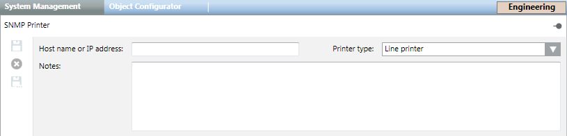

SNMP Printer
For configuration instructions, see Configuring SNMP Monitoring of a Printer.

The default SNMP printer model is based on two Object IDs, whose information is mapped on seven system properties.
Printer Properties
- Not Reachable
- Paper Not Available
- Toner Not Available
- Door Open
- Paper Jammed
- Offline
- Faulty
Object IDs (OIDs)
- MIB hrPrinterStatus (.1.3.6.1.2.1.25.3.5.1)
If the return code is = 2, the printer is Not Reachable. - MIB hrPrinterDetectedErrorState (.1.3.6.1.2.1.25.3.5.2)
Returns the bit mask illustrated in the following table.
Printer Error State | ||
Bit | Condition | Description |
0 (LSB) | lowPaper | If true, the Paper Availability property is set to False. |
1 | noPaper | If true, the Paper Availability property is set to False. |
2 | lowToner | This condition is not mapped as it does not need an immediate intervention. |
3 | noToner | If true, the Toner Availability property is set to False, and the Faulty property is set to True. |
4 | doorOpen | If true, the Door Open property is set to True, and the Faulty property is set to True. |
5 | jammed | If true, the Paper Jam property is set to True, and the Faulty property is set to True. |
6 | offline | If true, the Offline property is set to True, and the Faulty property is set to True. |
7 | serviceRequested | If true, the Faulty property is set to True. |
8 | inputTrayMissing | If true, the Faulty property is set to True. |
9 | outputTrayMissing | If true, the Faulty property is set to True. |
10 | markerSupplyMissing | If true, the Faulty property is set to True. |
11 | outputNearFull | If true, the Faulty property is set to True. |
12 | outputFull | If true, the Faulty property is set to True. |
13 | inputTrayEmpty | If true, the Faulty property is set to True. |
14 | overduePreventMaint | If true, the Faulty property is set to True. |

The full support of the conditions reported via SNMP depends on the printer characteristics. In certain cases, only a partial support may be possible.
For example, the following devices show full SNMP support:
- Network Printer Servers, such as HP JetDirect
- HP Color LaserJet 2600n
However, the following model does not always report the fault conditions on SNMP:
- Epson Work Force AL-MX200DWF